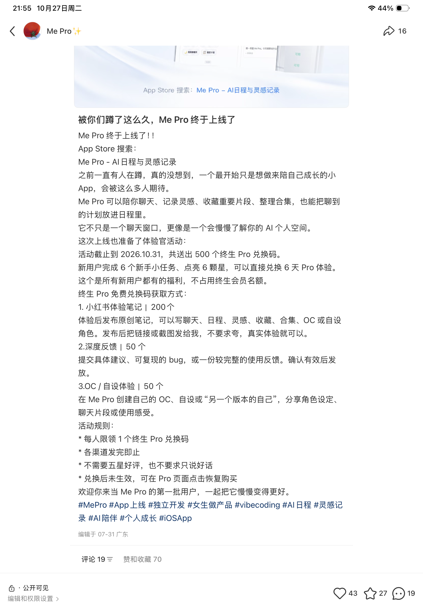
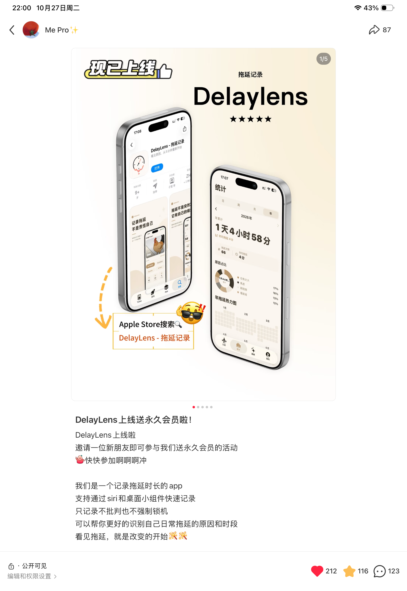
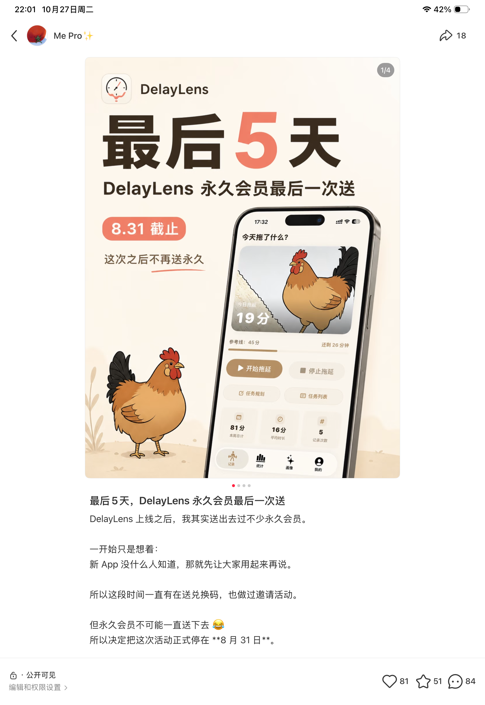
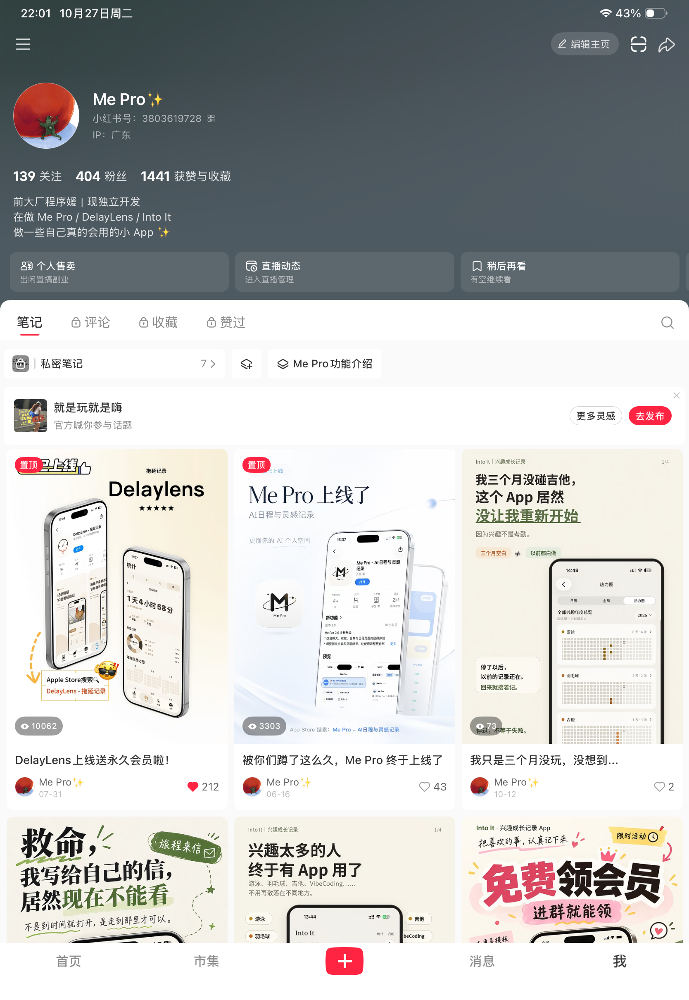
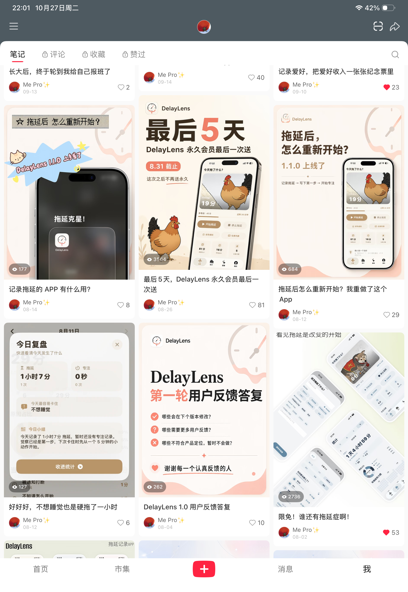

项目背景与策略演进
三款 C 端 iOS 应用上线后，早期运营面临自然流量有限、产品价值理解不足和会员付费表现不理想等问题。为了获取早期用户、收集反馈并探索商业化，我结合小红书内容、社群承接与免费权益，先后执行三种激励方案。
Me Pro
用新手任务和内容参与奖励，推动用户体验与反馈。
DelayLens
结合前一轮参与门槛的观察，采用好友邀请与永久会员激励。
Into It
转向一个月会员体验，探索权益吸引力与长期付费之间的关系。
按策略演进组织叙事，各产品活动时间存在重叠，未构成控制变量的对照实验。
阶段一：任务体验与参与激励
问题与判断
Me Pro 功能较多，用户在理解产品价值、配置 AI API 和开始使用方面存在障碍。我希望用实际体验降低理解门槛，并通过奖励收集反馈、鼓励内容分享。
执行动作
- 设计 6 项新手任务，点亮 6 颗星后可领取 6 天 Pro 体验。
- 设置 KOC 体验笔记、深度反馈、OC / 自设内容分享等终身会员奖励条件。
- 建立社群，承接活动、使用咨询和产品反馈；结合功能介绍与新手引导优化辅助用户体验。
上线宣传笔记发布于 2026.06.16，当前规则注明活动截止 2026.10.31。永久会员兑换码为计划名额，未作为实际发放或兑换成果。
查看 Me Pro 活动规则原图

6 项任务换 6 天 Pro；永久会员按内容、反馈等条件参与。规则截图标注编辑于 2026.07.31，名额为计划额度，不作为实际发放数量。
观察与策略调整
社群列表截图显示 Me Pro 为 133 人。2026.06.16 的聊天记录中，用户提交新手任务完成页并提出 API 引导问题；6 月 28 日在群内发布了包含 AI 连接优化的更新说明。
发布内容、提交详细反馈或创作 OC，仍需要较高参与投入。KOC 内容虽有产出，但未获得预期传播。这使我在后续产品中尝试更直接的参与激励。
展开 Me Pro 用户教育与机会获客案例阶段二：好友邀请与永久会员
策略与执行
DelayLens 是拖延后的温和重启工具。结合 Me Pro 活动中参与门槛较高的观察，我采用“邀请一位新朋友参与，领取终身会员兑换码”的机制，尝试让既有用户带来新的潜在用户。
2026.07.31 发布邀请活动笔记，以社群承接活动、资格核验、兑换沟通和反馈收集；8 月 26 日发布“最后 5 天”收尾内容，注明 8 月 31 日截止。
查看邀请活动与收尾笔记原图

正文说明邀请一位新朋友参与，页面展示 212 赞、116 收藏与 123 评论的快照。

内容明确 8 月 31 日截止；页面展示 81 赞、51 收藏与 84 评论的快照。
内容与社群记录
| 记录 | 截图中的平台快照 |
|---|---|
| 上线福利推广笔记 2026.07.31 发布 | 列表阅读数 10,062 212 赞 · 116 收藏 · 123 评论 |
| 永久会员活动收尾笔记 2026.08.26 发布 | 列表阅读数 3,564 81 赞 · 51 收藏 · 84 评论 |
| 社群人数 | 群列表截图显示 243 人 |
笔记列表与详情页截图提供于 2026.10.27。阅读数为列表可见的累计指标，不作为去重触达、活动期新增下载或付费转化。
查看笔记列表中的阅读数快照

对应“DelayLens 上线送永久会员啦！”的列表阅读数；列表标注发布日期 07-31。

对应“最后 5 天，DelayLens 永久会员最后一次送”的列表阅读数；列表标注 08-26。
App Store Connect 记录
据本人运营记录，App Store Connect 曾显示 248 次 App 内购买事件及对应统计期约 19 美元所得。该组记录中的实际付费与促销兑换构成尚未区分，因此只保留为商业化观察，不据此计算付费人数或转化率。
复盘判断
活动获得了内容观看、用户参与和集中反馈，但推广参与与实际付费表现存在差异。免费福利能够吸引参与，仍不足以证明持续付费需求；永久权益的激励效果，也需要与长期权益成本一并评估。
阶段三：一个月会员体验
策略调整
在 DelayLens 的永久会员实践之后，我希望保留免费权益的传播吸引力，并控制长期权益发放，因此在 Into It 改用一个月会员体验，同时简化领取方式。
通过小红书宣传兴趣成长记录场景与会员活动，以社群承接领取、咨询与用户反馈。
实际结果与观察
群列表截图显示 Into It 社群为 106 人。部分用户得知权益只有一个月后，没有进一步下载；内容传播、下载和付费均未达到预期，后续运营实验未持续推进。
这一轮未能验证限时会员能否改善付费转化。观察到的领取意愿与产品长期价值仍需分开理解，不能仅凭权益吸引力判断获客质量。
补充阅读：Into It 用户价值表达与单篇内容复盘整体交付与可确认结果
围绕三款产品，完成不同会员激励方案的设计与执行，并建立内容传播和社群承接渠道；在实践中处理参与门槛、使用咨询、反馈收集与权益沟通等具体问题。
社群人数已对照本次提供的三群列表原图，分别列示，不合计为跨产品去重用户，也不等同于活动新增、激活或付费人数。笔记、社群与后台数据各有统计窗口；本页资料整理于 2026.10.27。
方法沉淀与实践边界
- 参与门槛：奖励价值与用户需要付出的体验、创作或邀请成本共同影响参与意愿。
- 获客质量：福利关注、进入社群、开始使用与真实付费，是不同的用户行为。
- 权益成本：永久权益与限时体验需要结合用户需求、长期使用价值和商业化空间评估。
三轮活动不能直接证明某种激励在统计意义上优于另一种。现有证据能够说明机制、执行、传播与部分参与结果，尚不足以打通参与、成功兑换、产品激活、留存和付费的完整观察链路。
真实的策略调整经验：
识别福利参与与可持续商业化之间的差异。